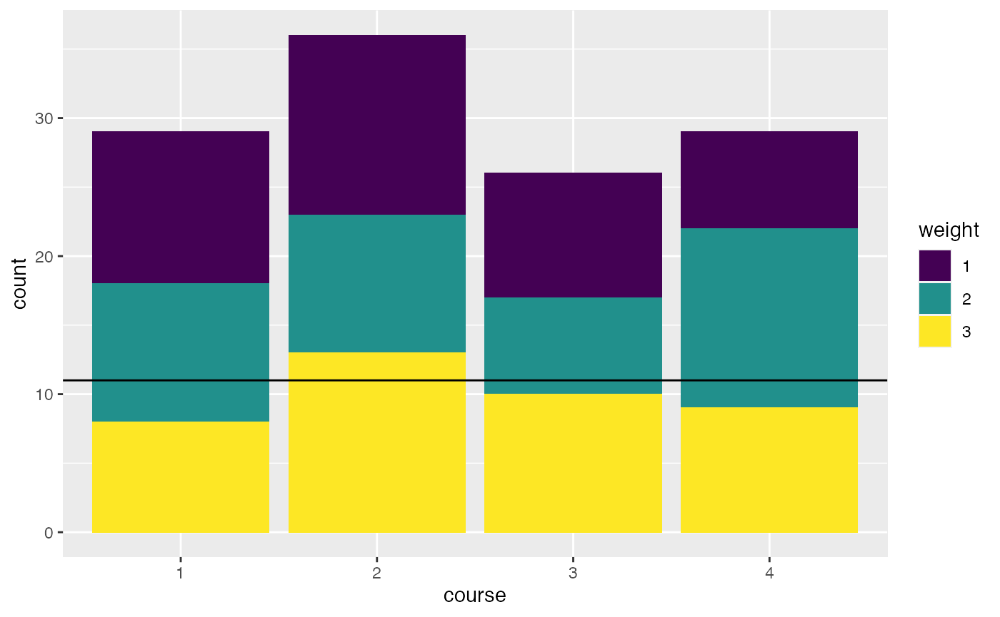
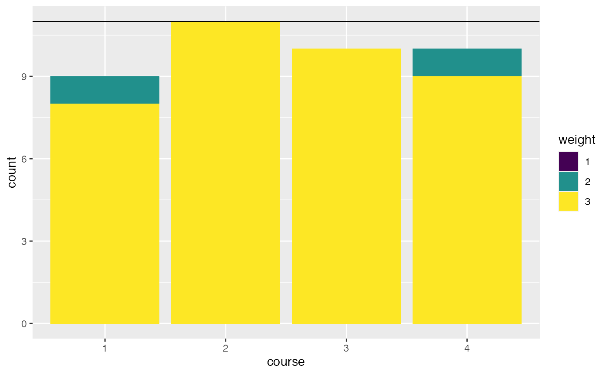

vignettes/problem-course-assignment.Rmd
problem-course-assignment.RmdIn this article we will look at assignment problems.
As a real world example problem we would like to match a group of students to a set of courses with the following constraints:
We have \(n\) students:
n <- 40
And \(m\) courses with equal capacity. The capacity can vary among courses though.
m <- 4 capacity <- rep.int(11, m) # all have equal capacities
In addition, each student has three preferences. To model this we have a function that gives us three courses for each student. The first component has perference 1, second 2, and third 3:
set.seed(1234) preference_data <- lapply(seq_len(n), function(x) sample(seq_len(m), 3)) preferences <- function(student) preference_data[[student]]
preferences(1)
## [1] 4 2 3The last component we need is a weight functions to make the model formulation easier. This function gives us the preference weighting for a course and student pair.
# the weight of a student choosing a course # if the course is not among the preferences, the weight is -100000 weight <- function(student, course) { p <- which(as.numeric(course) == preferences(as.numeric(student))) as.integer(if (length(p) == 0) { -100000 } else { p }) }
Some examples:
weight(1, 3)
## [1] 3weight(1, 23) # this was not a choice by student 1, so we give it a big penalty
## [1] -100000Let’s take a look at our random preferences. We plot the number of votes for each course grouped by the preference (1, 2, 3).
library(ggplot2) library(purrr) library(dplyr) plot_data <- expand.grid( course = seq_len(m), weight = 1:3 ) %>% rowwise() %>% mutate(count = sum(map_int(seq_len(n), ~weight(.x, course) == weight))) %>% mutate(course = factor(course), weight = factor(weight)) ggplot(plot_data, aes(x = course, y = count, fill = weight)) + geom_bar(stat = "identity") + viridis::scale_fill_viridis(discrete = TRUE) + geom_hline(yintercept = 11)

The idea is to introduce a binary variable \(x_{i, j}\) that is \(1\) if student \(i\) is matched to course \(j\). As an objective we will try to satisfy preferences according to their weight. So assigning a student to a course with preference 3 gives 3 points and so forth. The model assumes, that the total capacity of the courses is enough for all students.
Here it is in mathematical notation:
\[ \begin{equation*} \begin{array}{ll@{}ll} \text{max} & \displaystyle\sum\limits_{i=1}^{n}\sum\limits_{j=1}^{m}weight_{i,j} \cdot x_{i, j} & &\\ \text{subject to}& \displaystyle\sum\limits_{i=1}^{n} x_{i, j} \leq capacity_j, & j=1 ,\ldots, m&\\ & \displaystyle\sum\limits_{j=1}^{m} x_{i, j} = 1, & i=1 ,\ldots, n&\\ & x_{i,j} \in \{0,1\}, &i=1 ,\ldots, n, & j=1 ,\ldots, m \end{array} \end{equation*} \]
Or directly in R:
library(ompr) model <- MIPModel() %>% # 1 iff student i is assigned to course m add_variable(x[i, j], i = 1:n, j = 1:m, type = "binary") %>% # maximize the preferences set_objective(sum_expr(weight(i, j) * x[i, j], i = 1:n, j = 1:m)) %>% # we cannot exceed the capacity of a course add_constraint(sum_expr(x[i, j], i = 1:n) <= capacity[j], j = 1:m) %>% # each student needs to be assigned to one course add_constraint(sum_expr(x[i, j], j = 1:m) == 1, i = 1:n) model
## Mixed integer linear optimization problem
## Variables:
## Continuous: 0
## Integer: 0
## Binary: 160
## Model sense: maximize
## Constraints: 44We will use glpk to solve the above model.
library(ompr.roi) library(ROI.plugin.glpk) result <- solve_model(model, with_ROI(solver = "glpk", verbose = TRUE))
## <SOLVER MSG> ----
## GLPK Simplex Optimizer, v4.65
## 44 rows, 160 columns, 320 non-zeros
## 0: obj = -0.000000000e+00 inf = 4.000e+01 (40)
## 43: obj = -8.999410000e+05 inf = 0.000e+00 (0)
## * 139: obj = 1.180000000e+02 inf = 0.000e+00 (0)
## OPTIMAL LP SOLUTION FOUND
## GLPK Integer Optimizer, v4.65
## 44 rows, 160 columns, 320 non-zeros
## 160 integer variables, all of which are binary
## Integer optimization begins...
## Long-step dual simplex will be used
## + 139: mip = not found yet <= +inf (1; 0)
## + 139: >>>>> 1.180000000e+02 <= 1.180000000e+02 0.0% (1; 0)
## + 139: mip = 1.180000000e+02 <= tree is empty 0.0% (0; 1)
## INTEGER OPTIMAL SOLUTION FOUND
## <!SOLVER MSG> ----We solved the problem with an objective value of 118.
matching <- result %>% get_solution(x[i,j]) %>% filter(value > .9) %>% select(i, j) %>% rowwise() %>% mutate(weight = weight(as.numeric(i), as.numeric(j)), preferences = paste0(preferences(as.numeric(i)), collapse = ",")) %>% ungroup
head(matching)
## # A tibble: 6 x 4
## i j weight preferences
## <int> <int> <int> <chr>
## 1 4 1 3 4,2,1
## 2 10 1 3 3,4,1
## 3 13 1 3 3,4,1
## 4 15 1 3 4,2,1
## 5 23 1 3 3,2,1
## 6 31 1 3 3,2,1## `summarise()` ungrouping output (override with `.groups` argument)## # A tibble: 2 x 2
## weight count
## <int> <int>
## 1 2 2
## 2 3 3838 students got their top preference. 2 students were assigned to their second choice and 0 students got their least preferable course.
The course assignment now looks like this:
plot_data <- matching %>% mutate(course = factor(j), weight = factor(weight, levels = c(1, 2, 3))) %>% group_by(course, weight) %>% summarise(count = n()) %>% tidyr::complete(weight, fill = list(count = 0))
## `summarise()` regrouping output by 'course' (override with `.groups` argument)ggplot(plot_data, aes(x = course, y = count, fill = weight)) + geom_bar(stat = "identity") + viridis::scale_fill_viridis(discrete = TRUE) + geom_hline(yintercept = 11)

Do you have any questions, ideas, comments? Or did you find a mistake? Let’s discuss on Github.